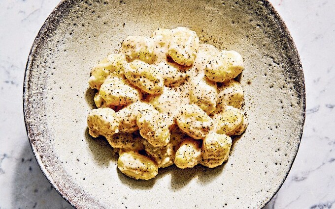

Gnocchi Cacio e Pepe

Description:
We return to Italy now to bring you this typical and very simple dish.
The idea is to give you a true piece of Italy in its most simple form, with only a few ingredients.
Ingredients:
- 300g of gnocchi
- 2 tablespoons of unsalted butter
- 60 grams of parmesan cheese
- 2 tablespoons of black pepper
- salad leaves
Steps:
- Cook the gnocchi in a large pan of lightly salted, boiling water. Drain and reserve 200ml of the cooking water.
- Heat the butter in a large frying pan. Add the gnocchi, cheese and pepper as well as 150ml of the cooking water, raise the heat a little and stir vigorously until melted and the gnocchi is well coated.
- Pour in more of the reserved water if you like it saucier. Season with a little salt. Transfer the gnocchi to bowls and serve with a mixed salad, if you like.
- That is it, enjoy!